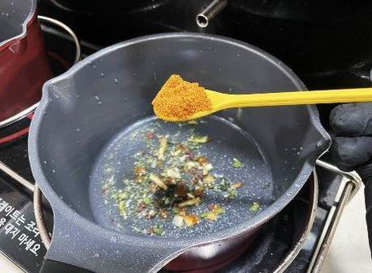
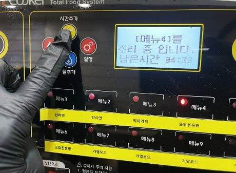
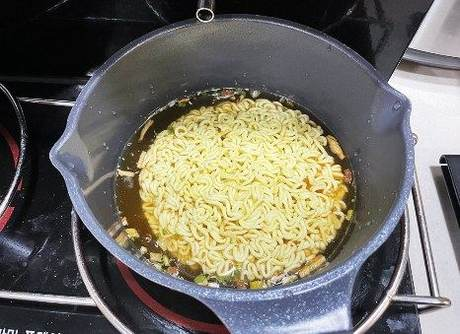
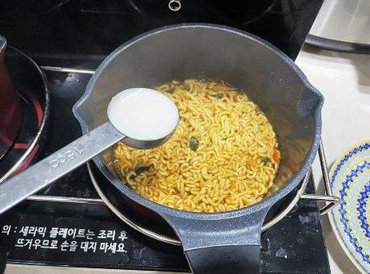
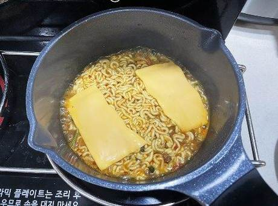
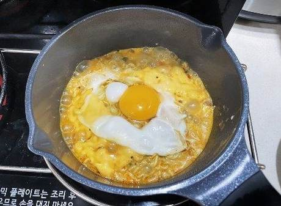
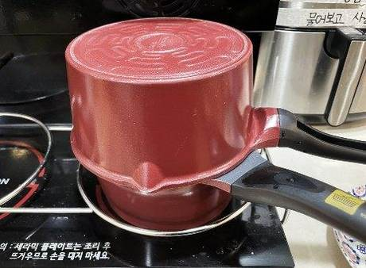
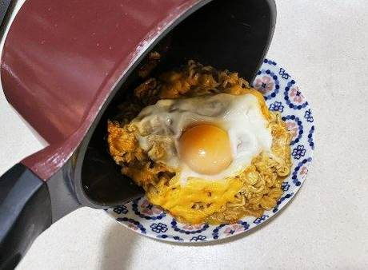
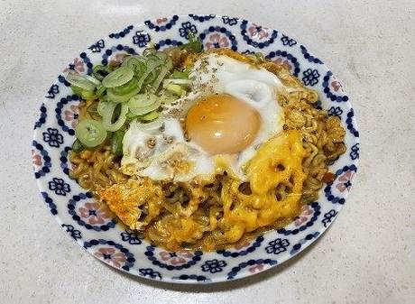

| 메뉴명 | 쿠지라이식 신계치(라면조리기) |
|---|---|
| 판매가격 | 6,900원 |
| 원재료 | 신라면, 계란, 체다치즈, 우유, 대파, 깨, 단무지 |
| 사용 부자재 | 덮밥접시 |
| 메뉴특징 | 계란, 치즈, 우유를 넣고 ‘쿠지라이식’ 으로 끓여내어 부드럽고 고소한 맛이 일품인 만화 속 ‘그’ 라면 |
조리방법

1
라면냄비에 신라면 건더기 스프 1봉, 분말스프 6g을 계량하여 넣는다.
라면냄비에 신라면 건더기 스프 1봉, 분말스프 6g을 계량하여 넣는다.

2
[불닭볶음면 모드]를 누르고 조리시작 버튼을 누른다.
[불닭볶음면 모드]를 누르고 조리시작 버튼을 누른다.

3
스프가 풀어지면 면을 넣는다. 면은 자주 섞지 말고, 최대한 모양이 유지되게 한다.
스프가 풀어지면 면을 넣는다. 면은 자주 섞지 말고, 최대한 모양이 유지되게 한다.

4
1분 30초 남았을 때, 우유 1T(20g)을 넣고 섞어준다.
1분 30초 남았을 때, 우유 1T(20g)을 넣고 섞어준다.

5
체다치즈 1장을 손으로 반 찢어 라면 가장자리에 올린다.
체다치즈 1장을 손으로 반 찢어 라면 가장자리에 올린다.

6
가운데에 계란 1개를 깨서 올린다.
가운데에 계란 1개를 깨서 올린다.

7
냄비를 뒤집어 뚜껑처럼 덮어 마저 끓여준다.
(※실리콘 냄비 뚜껑 사용해도 됨)
냄비를 뒤집어 뚜껑처럼 덮어 마저 끓여준다.
(※실리콘 냄비 뚜껑 사용해도 됨)

8
조리가 완료되면, 접시에 옮겨 담는다.
조리가 완료되면, 접시에 옮겨 담는다.

9
대파 10g, 깨 약간을 뿌린 뒤, 단무지와 함께 제공한다.
(※제공 멘트: 섞어서 드세요)
대파 10g, 깨 약간을 뿌린 뒤, 단무지와 함께 제공한다.
(※제공 멘트: 섞어서 드세요)
※ 제조 후 최대한 빨리 제공할 것.